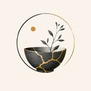

Our healing-centered programs and community initiatives—where creative expression meets meaningful impact.
Healing-centered programs designed to empower, inspire, and transform young lives.
Guided creative sessions where youth express emotions, process experiences, and rebuild self-worth through art, writing, and music in a safe, understanding environment.
Facilitated peer circles where young people connect, share experiences, and support each other through their healing journeys—because emotions are not cringe, they are part of being human.
Practical workshops exploring the connection between emotions and creativity, building emotional intelligence, self-compassion, and authentic self-expression.
Initiatives that bring healing resources directly to our community.
Collecting art supplies and wellness resources for young people
We're collecting art supplies, journals, and wellness resources to support youth in our local community. All donations directly support our free healing programs.
A day of free workshops and resources
Join us for a free community event featuring hands-on art workshops, peer support circles, mental health resources, and kintsugi crafting sessions for all ages.
Mental wellness resources for the holidays
Providing care packages with wellness resources, comfort items, and our signature kintsugi-inspired journals to youth experiencing challenges during the holiday season.
Hear from youth whose lives have been touched by our healing-centered programs.
I never thought art could make me feel so understood. The healing circles helped me process things I couldn't even put into words. My emotions aren't cringe—they're just part of who I am.